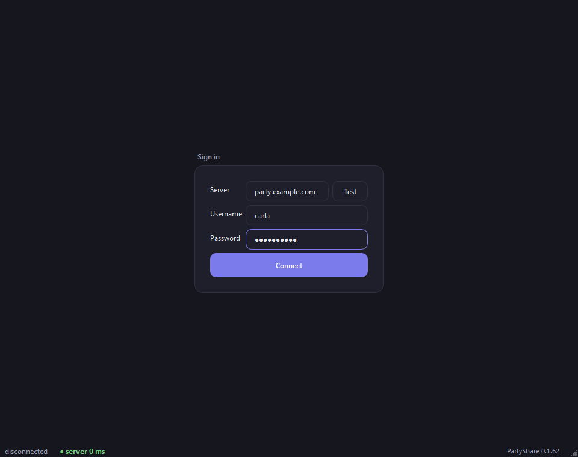
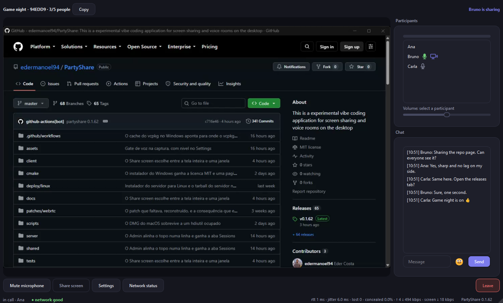
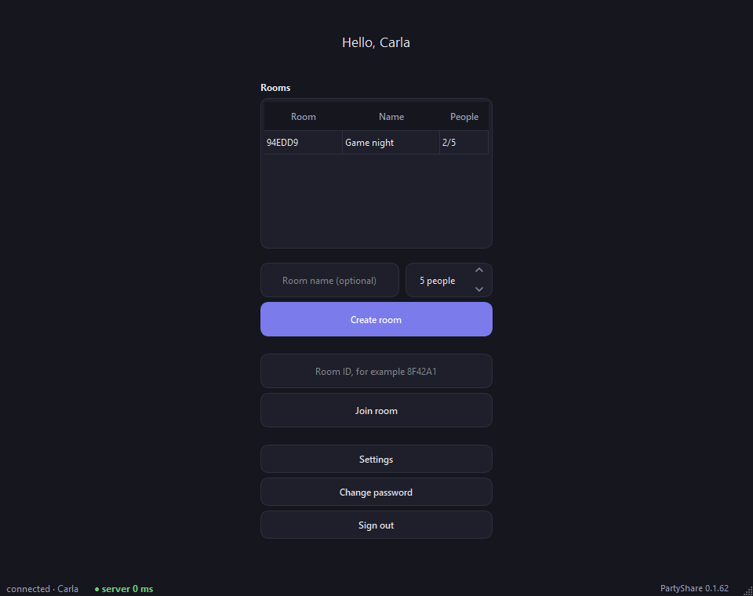
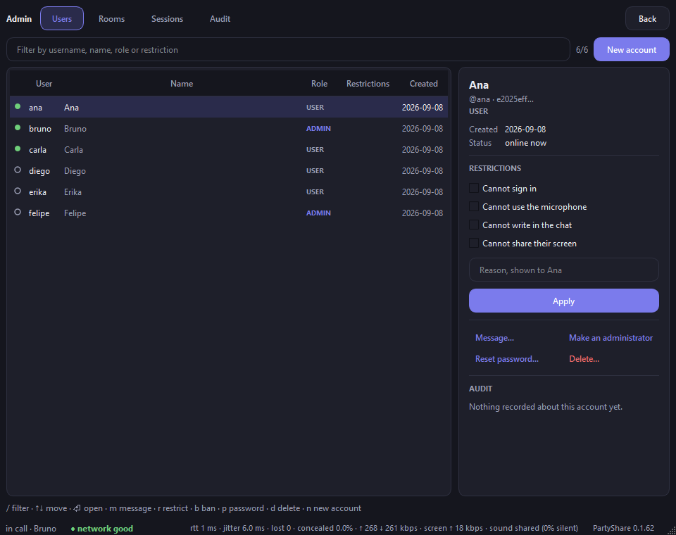
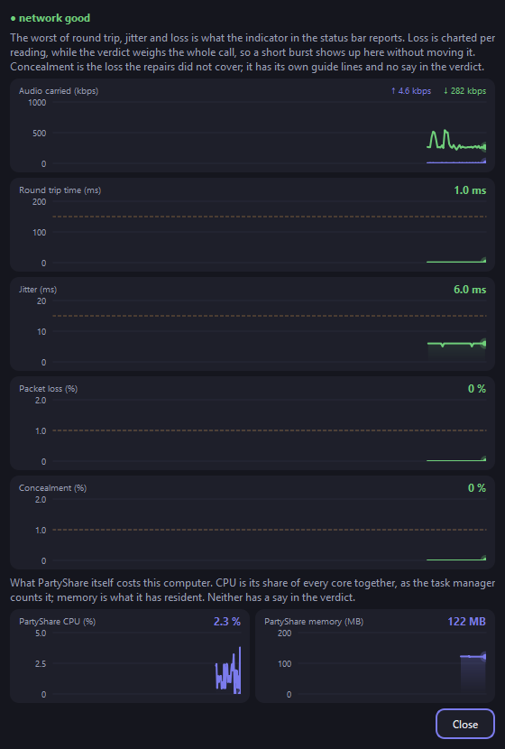
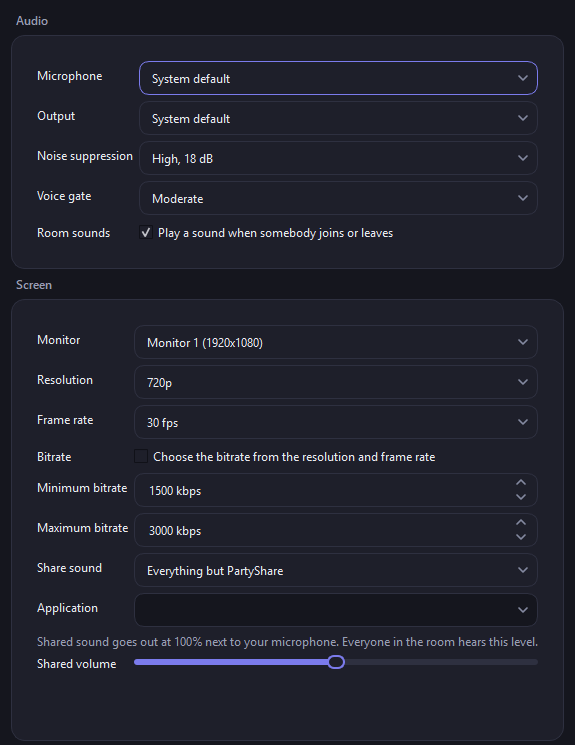

Sign in to a server you run
The client asks for the server address and tests it before connecting. Accounts live on the server, so the same name and password work from any machine, and an administrator can end any session from anywhere.
Open source · MIT · Windows, macOS and Linux
A desktop app for a room of a few people. One of them shares a screen at 720p and 30 frames a second, everyone talks over it, and the chat waits for whoever arrives late. A C++20 client on Qt 6, a signaling server with its own SFU, and WebRTC end to end.
Latest release v0.1.62, published . Every release carries a SHA256SUMS list.

What a room looks like
Every screen below is the client as it ran on Windows 11, version 0.1.62, with a server on the same machine and three accounts signed in. Nothing is mocked up.

The client asks for the server address and tests it before connecting. Accounts live on the server, so the same name and password work from any machine, and an administrator can end any session from anywhere.

A room holds five people unless whoever creates it asks for more. Its code is six hexadecimal characters, short enough to say over the phone. An ordinary room disappears when it empties; a persistent one, which only an administrator may create, keeps its code across restarts.

An account is user or admin, and carries four restrictions: whether it may sign in, use a microphone, write in the chat, or share a screen. A restriction outlasts the room, the session and the process, which is what separates it from a kick or a forced mute.
Every administrative action is checked on the server against the account store at that moment, not against what the session logged in with, and every one is written to an audit log. The same operations exist as a terminal tool that needs no server running.
The footer of every call reports the worst round trip, jitter and loss of the last readings, and a one-word verdict. The Network status window charts each of them over the call, adds what the repairs could not cover, and shows what PartyShare itself costs the computer in processor and memory.
Settings take effect immediately, during a call: which microphone and output, how much noise suppression, a voice gate, which monitor or window to share, its resolution, frame rate and bitrate, and whether the sound of the machine goes out next to the microphone.


How it is built
One C++20 codebase, built with CMake and vcpkg on three platforms. The protocol is written down before it is implemented, so a server in another language could replace this one without touching the clients.
Qt 6 Widgets for the interface. Captures the screen and the microphone, speaks WebSocket to the signaling server and WebRTC to the SFU. No media or network module includes a Qt header, and that rule is checked in review.
Two halves in one process. Signaling routes JSON over WebSocket and owns the room lifecycle. The SFU forwards RTP between participants without decoding anything, so it spends bandwidth and almost no processor.
The wire protocol is a normative document, and the C++ follows it rather than the other way around. Accounts, persistent rooms, chat and the audit log are kept in MongoDB, which is optional at build time.
Answers the server's offer. Captures, encodes, plays out.
Owns mids, SSRCs and payload types, so forwarding is a header rewrite. Picks the share bitrate, because only it sees both links.
Every participant's video lines exist from the moment they join, so starting a share renegotiates nothing.
| Area | Choice | Why |
|---|---|---|
| Language, build | C++20, CMake presets, Ninja, vcpkg in manifest mode | The same versions on three platforms and in CI |
| Interface | Qt 6 Widgets | Dense in controls, no heavy animation |
| Client media | libwebrtc, built from source | Brings AEC3, noise suppression, AGC, jitter buffer, congestion control, SRTP, ICE and desktop capture ready made |
| Screen capture | webrtc::DesktopCapturer | Already covers Windows Graphics Capture, DXGI, ScreenCaptureKit, X11 and PipeWire |
| Video codec | H.264: OpenH264, or NVENC and Media Foundation behind the encoder factory | Cross platform with no GPU dependency, hardware when there is one |
| SFU and signaling | libdatachannel, WebSocket + JSON | Small, compiles anywhere, forwards RTP at packet level; one network stack instead of two |
| Persistence | MongoDB, optional | Accounts, roles, persistent rooms, chat, audit log |
Download
A push to master cuts a release: the workflow works out the next version, tags it and publishes. Nothing is built on a development machine. Stated plainly, because a build nobody ran is worth no more than a blank space.
| Platform | Client | Server | State |
|---|---|---|---|
| Windows x64 | .msi and .zip, media layer included | Build from source | Built, installed and run |
| macOS, Apple silicon | .dmg, media layer included | Build from source | Built, installed and run |
| Linux x64 | Build from source | Tarball; scripts/install_server.sh installs MongoDB, the service and an administrator in one command | Built, run and measured. Every number in the documentation comes from here |
| macOS, Intel | Nothing yet | Nothing yet | Never built; the blocker is named in the release chapter |
Documentation
Everything written about the project is one book with one entry point. Each subject lives in exactly one chapter; the ones most people open first are below.